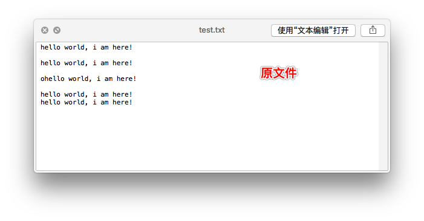
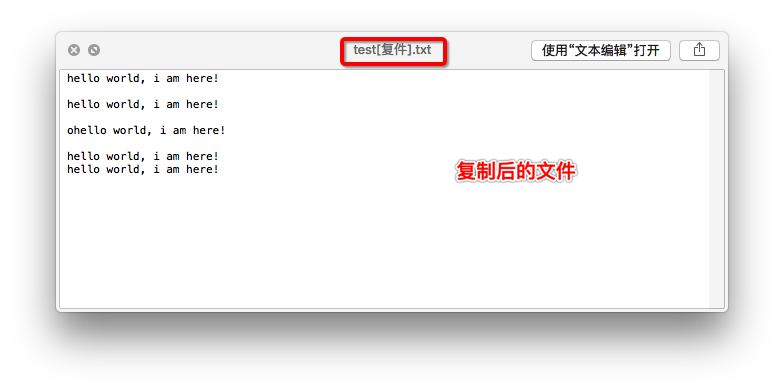

应用1:制作文件的备份
任务描述
- 输入文件的名字，然后程序自动完成对文件进行备份


参考代码
# 提示输入文件
oldFileName = input("请输入要拷贝的文件名字:")
# 以读的方式打开文件
oldFile = open(oldFileName,'rb')
# 提取文件的后缀
fileFlagNum = oldFileName.rfind('.')
if fileFlagNum > 0:
fileFlag = oldFileName[fileFlagNum:]
# 组织新的文件名字
newFileName = oldFileName[:fileFlagNum] + '[复件]' + fileFlag
# 创建新文件
newFile = open(newFileName, 'wb')
# 把旧文件中的数据，一行一行的进行复制到新文件中
for lineContent in oldFile.readlines():
newFile.write(lineContent)
# 关闭文件
oldFile.close()
newFile.close()